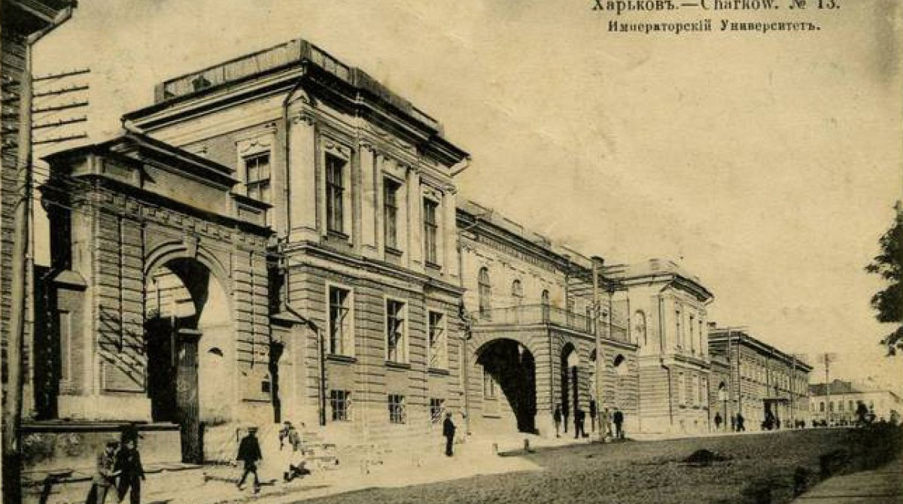
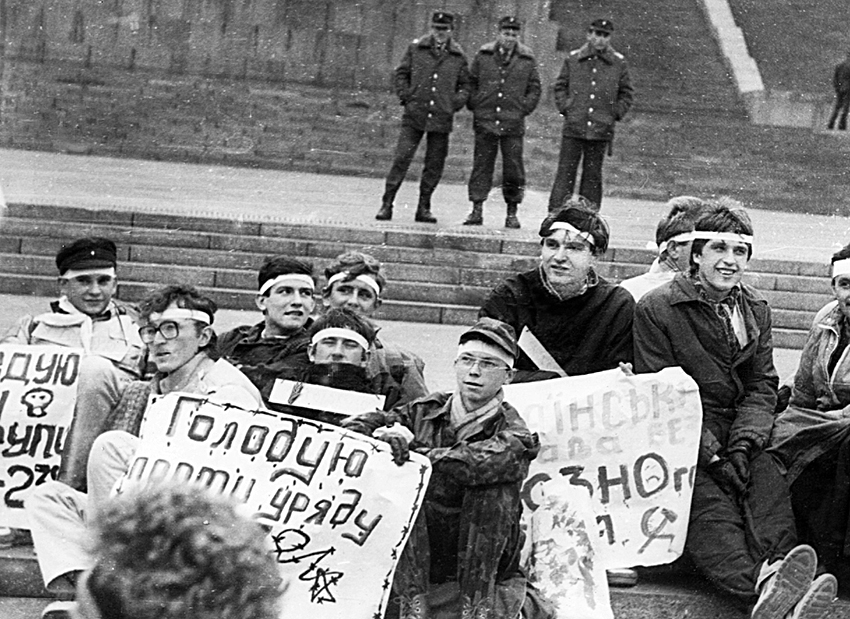
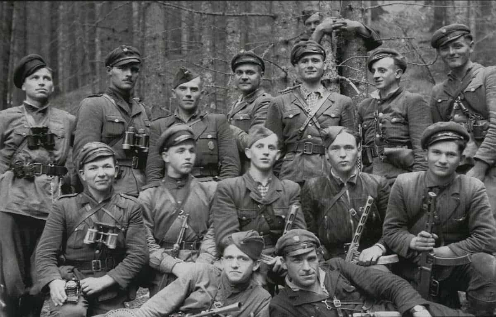
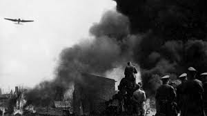
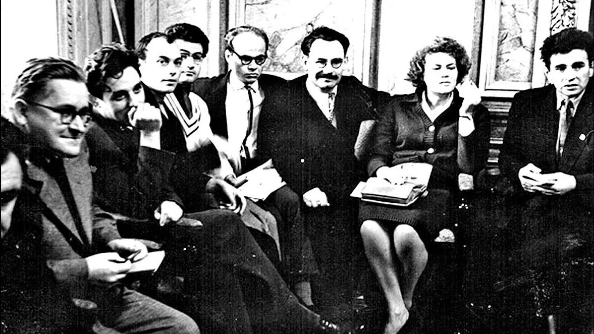
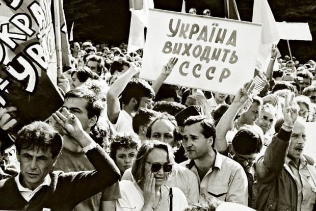

XIX століття: Пробудження національної свідомості

У XIX столітті стало періодом пробудження національної
свідомості українців. Незважаючи на політику русифікації, проведеної
Російською імперією, в Україні з’явилися перші українські культурні
товариства, видання, розвивалася література. Виникла українська
інтелігенція, яка відігравала важливу роль у формуванні національної
ідентичності.
Початок XX століття: Революції та надія на незалежність

Революція 1905 року дала поштовх розвитку українського
національного руху. З розпадом Російської імперії під час Першої
світової війни з’явилася надія на створення незалежної української
держави.
У січні 1918 року було проголошено Українську Народну
Республіку (УНР). Однак, боротьба за існування УНР була надзвичайно
складною. Молода держава зіткнулася з агресією з боку більшовиків,
денікінців та польських військ.
Міжвоєнний період: Радянська окупація та боротьба ОУН

Після поразки УНР більша частина українських земель опинилася під
радянською владою. Почалася політика радянізації, спрямована на
знищення української національної ідентичності. Одним з найтрагічніших
наслідків радянської влади став Голодомор 1932-1933
років, який призвів до загибелі мільйонів українців. У відповідь на
репресії виникла Організація українських націоналістів (ОУН), яка
боролася за незалежність України.
Советская оккупация Западной Украины в конце 1930-х годов стала
поворотным моментом в истории украинского народа. Репрессии, голод и
коллективизация привели к тяжелым потерям населения и дестабилизации
общественной жизни. В ответ на советскую политику активизировалась
деятельность Организации украинских националистов (ОУН), которая
развернула масштабное вооруженное сопротивление. Борьба ОУН против
советской власти стала одним из самых трагических эпизодов украинской
истории.
Друга світова війна: Нові виклики

Під час Другої світової війни українці знову опинилися між молотом і
ковадлом. ОУН розкололася на дві фракції, що призвело до внутрішньої
боротьби. Була створена Українська повстанська армія (УПА), яка
боролася проти німецьких окупантів та радянської влади.
Друга половина XX століття: Дисидентський рух

Незважаючи на радянську окупацію, український національний дух не був
зламаний. Виник дисидентський рух, представники якого боролися за
права людини, демократію та відродження української культури.
Чорнобильська катастрофа стала ще одним ударом по радянській системі
та підірвала довіру до неї серед українців.
Розпад СРСР та незалежність України

Перебудова в СРСР відкрила шлях до розпаду імперії.
24 серпня 1991 року Україна проголосила свою незалежність.
Це стало кульмінацією століть боротьби українського народу за
самостійність.
Цей абзац буде зеленим завдяки селектору .article + p.
Цей абзац буде золотим завдяки селектору .article ~ p.
Цей абзац теж буде золотим завдяки селектору .article ~ p.
Текст всередині елемента .text буде бірюзовим.
А цей текст буде синім тому що в нас є більш спеціфічий селектор
.text span в style.css
Висновок
Історія боротьби України за незалежність – це драматична і водночас
героїчна сага. Українці пройшли довгий і складний шлях, щоб досягти
свободи. Ця боротьба стала визначальною для формування української
нації та її ідентичності.